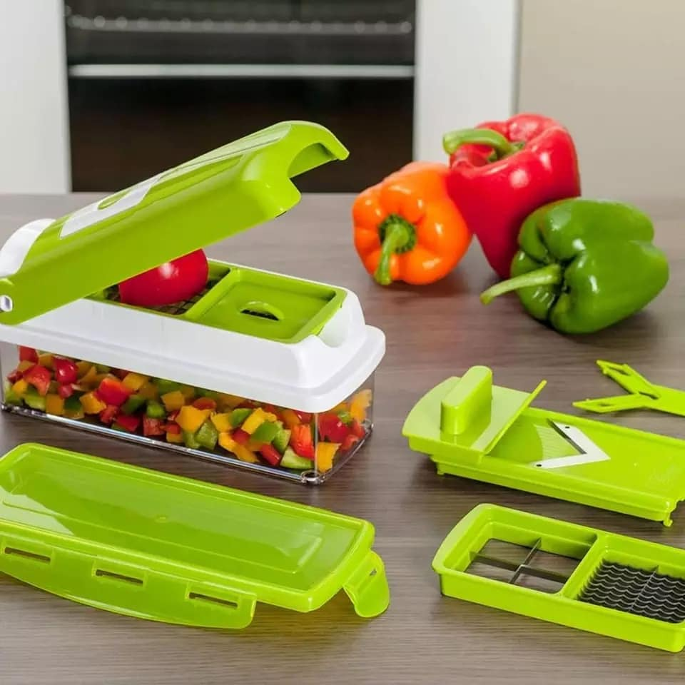
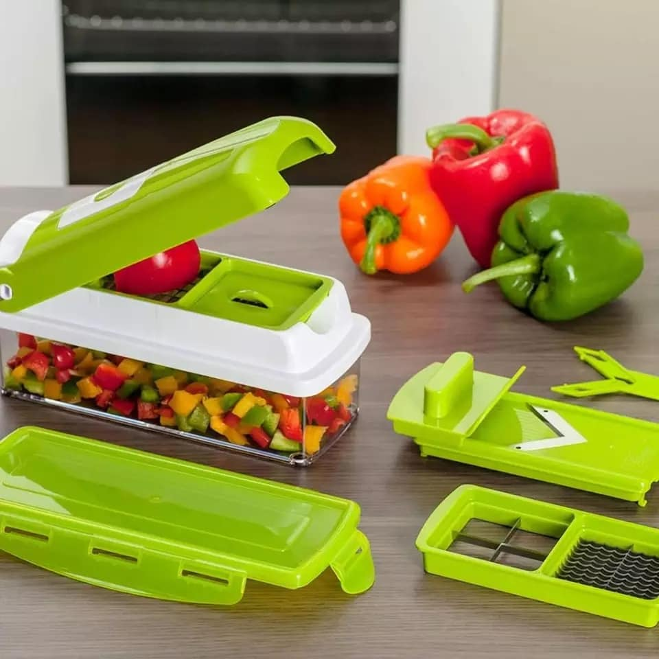

Receta de pollo con verduras al horno
Ingredientes
- 4 muslos de pollo
- 1 pimiento rojo
- 1 pimiento verde
- 1 cebolla
- 2 patatas
- 4 dientes de ajo
- Sal y pimienta
- Aceite de oliva
- Ramas de romero y tomillo
Pasos
- Precalentar el horno a 200°C.
- Cortar las patatas y los pimientos en trozos grandes. Pelar y cortar la cebolla en cuartos. Pelar los dientes de ajo y cortarlos en láminas finas.
- Colocar las patatas, los pimientos, la cebolla y el ajo en una bandeja de horno. Agregar sal, pimienta, ramas de romero y tomillo al gusto, y un chorrito de aceite de oliva. Mezclar bien.
- Colocar los muslos de pollo encima de las verduras. Salpimentar al gusto y rociar con un poco más de aceite de oliva.
- Hornear durante 45-50 minutos, o hasta que el pollo esté dorado y las verduras estén tiernas. Durante la cocción, dar vuelta a los muslos de pollo una o dos veces para que se doren de manera uniforme.
- Servir caliente, acompañado de un poco de perejil fresco picado.
Imágenes
 
